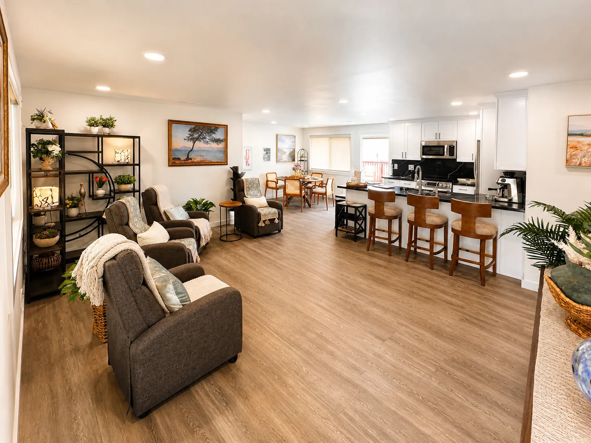
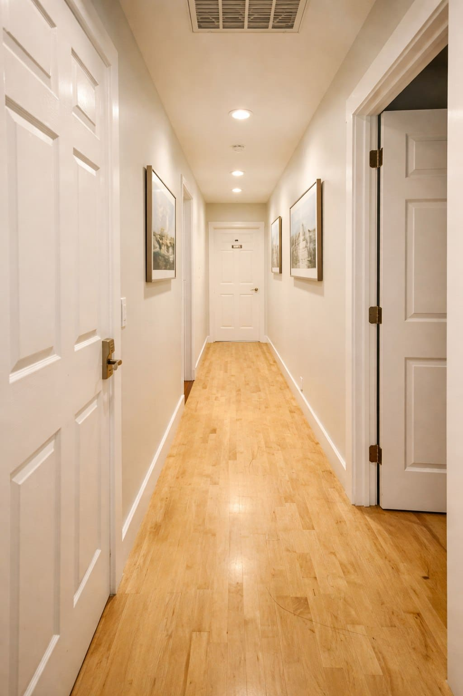

Registered Nurse and clinical leader of Magnolia Senior Care's two Adult Family Homes in Burien and Des Moines, Washington.
Sosena guides Magnolia with a calm nursing perspective shaped around dignity, safety, medication awareness, dementia-sensitive routines, family communication, and the comfort of small-home care.
Registered NurseRN Owner & Operator — BurienRN Manager — Des MoinesFamily-centered support
Registered Nurse | RN Owner & Operator — Burien | RN Manager — Des MoinesLeadership grounded in observation, communication, and calm daily care.
Role at each home
One RN perspective, two clearly defined roles.
Magnolia's two homes are separate licensed Adult Family Homes. Sosena's role is different at each one, and families deserve to know exactly what that means.
Burien, WA
Magnolia Senior Loving Care: RN-Owned & Operated
Sosena owns and operates the Burien home. She is directly responsible for how the home runs, how care is planned, and how the care team communicates with residents and families.
The Des Moines home's licensed provider owns and operates it; that is a different role from Sosena's. As RN Manager, she oversees resident care: guiding care planning, reviewing changes in residents' needs, and supporting communication with families and outside providers.
Magnolia Senior Care provides RN-guided care oversight, individualized care planning, and coordination with healthcare professionals. Registered Nurse visits are scheduled according to resident needs and each home's care arrangements. Trained caregivers provide 24-hour resident support. RN-led does not mean a nurse is on site around the clock.
RN-led care in a real home
Clinical awareness should make daily life feel calmer, not colder.
Magnolia connects nursing perspective with the ordinary details families notice during a tour: safe movement through the home, familiar meals, calm shared spaces, medication routines, and communication that feels direct.

Calm shared routines

Safety in daily movement
Care philosophy
Care should feel safe, personal, and understandable.
Magnolia's care philosophy is intentionally small-home and family-centered. The goal is not to make care feel clinical or distant. The goal is to make daily life feel calmer, more familiar, and more closely observed.
Sosena's RN perspective shapes how Magnolia thinks about dignity, routines, medications, communication, appetite, mobility, dementia changes, transitions, and coordination when care needs change.
Dignity
Known beyond care tasks
Residents are supported as whole people, with routines, preferences, family relationships, and personal history treated as part of the care picture.
Safety
Observation in daily life
Small changes in mobility, appetite, sleep, confusion, skin, medications, or mood can matter. RN awareness helps Magnolia know what to watch and when to communicate.
Communication
Families should not feel in the dark
Magnolia emphasizes direct, practical communication with families, POAs, discharge planners, and healthcare providers when appropriate.
Calm setting
Small-home support
A quieter Adult Family Home environment can support familiar rhythms, dementia-sensitive routines, meals, rest, and more personal day-to-day attention.
What Sosena oversees
Where RN leadership shows up in daily care.
RN-led does not mean Magnolia replaces physicians, hospitals, hospice teams, pharmacists, therapists, or other licensed professionals. It means Magnolia's leadership brings nursing awareness into care planning, daily observation, communication, and knowing when outside clinical guidance is needed.
Care planning
Individualized care plans
Each resident's care plan is built around their needs, routines, and preferences, and revisited as those needs change, with families included in the conversation.
Assessments
Understanding each resident
Before move-in and as needs change, Sosena helps review mobility, memory, daily support, and safety needs so the home can plan care realistically.
Chronic conditions
Awareness of ongoing health needs
Many residents live with long-term conditions. Nursing awareness helps the team notice changes that may matter and share them with the resident's healthcare providers.
Medication safety
Careful routines and communication
Medication changes, missed doses, side effects, and refills can affect safety. Magnolia supports medications with consistent routines, within Washington's Adult Family Home rules, and keeps families informed.
Fall-risk reduction
Safer movement through the day
Transfers, footwear, lighting, hydration, sleep, and medication effects all connect to fall risk. RN-led awareness helps the team notice patterns and adjust daily routines.
Dementia-informed support
Routines that reduce overwhelm
Dementia support starts with daily rhythms: familiar caregivers, calm spaces, lower stimulation, gentle cueing, meals, sleep, and family updates.
Healthcare coordination
Working with outside providers
Sosena Mekuria, RN, supports care planning, communication with healthcare professionals, and coordination when residents' care needs change.
Transitions
Hospital and rehab understanding
After a hospital or rehab stay, families often need help making sense of medications, mobility limits, equipment, follow-up appointments, and supervision needs.
Family communication
Families should not feel in the dark
Clear, practical updates for families and POAs about what is changing, what support is needed, and which next step is realistic.
RN-reviewed education
How Sosena's perspective supports the Resource Center.
Magnolia's Resource Center is designed to help families understand care decisions before they feel rushed. Articles are reviewed through an RN-led lens for safety, dignity, family communication, and practical next steps.
The guidance is educational, not a substitute for medical, legal, or financial advice.